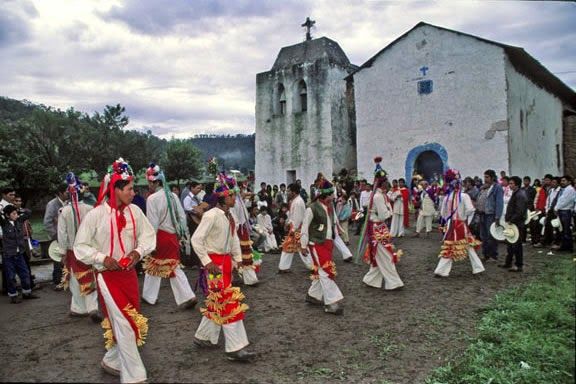

Denominados de esta manera para diferenciarlos de los Tepehuanes que habitan en el sur del estado de Durango, con los cuales tienen importantes diferencias, ellos mismos se dan el nombre de ódame, son el segundo grupo étnico del estado y habitan principalmente en el municipio de Guadalupe y Calvo, siendo su principal asentamiento Baborigame.
